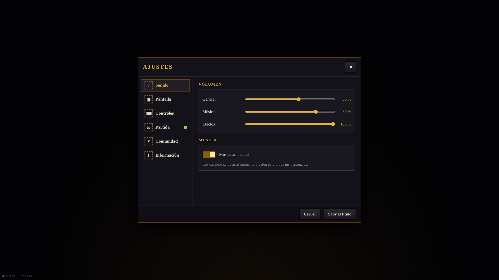
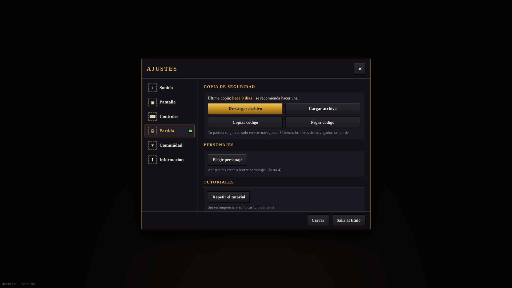
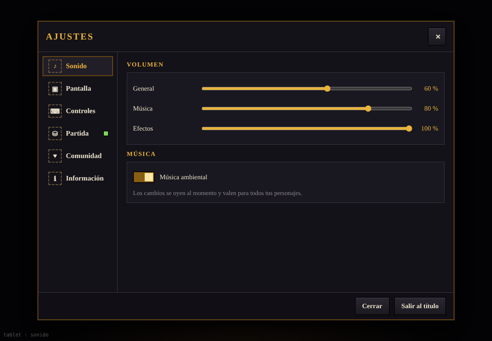
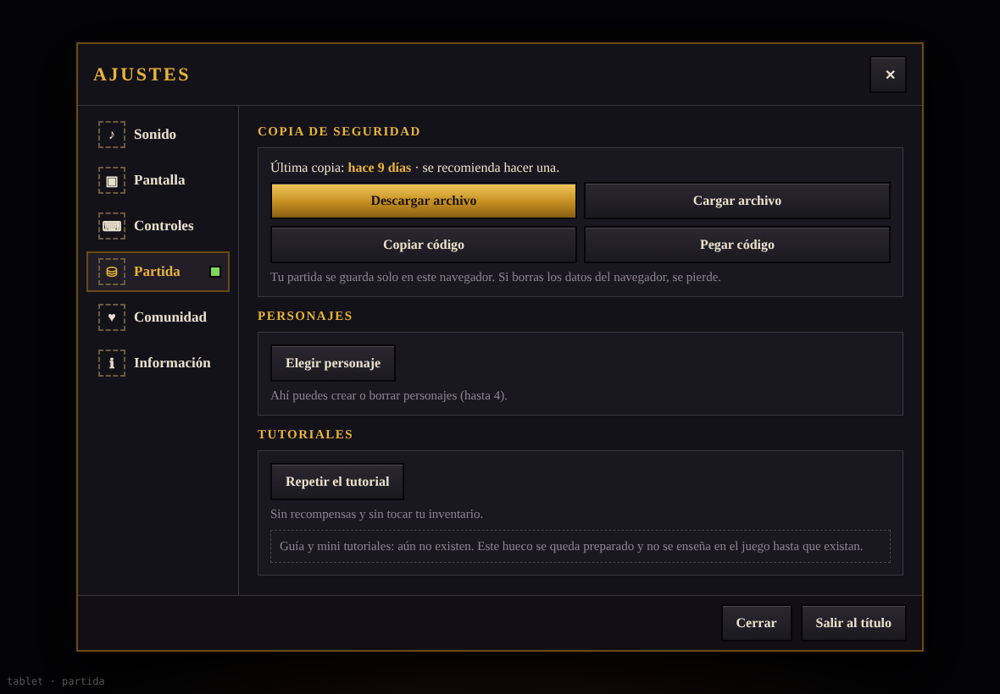
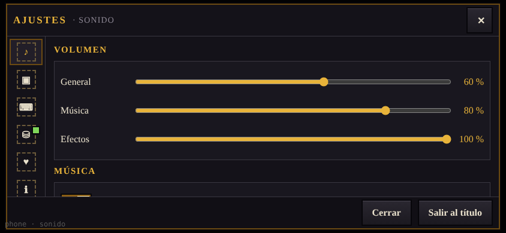
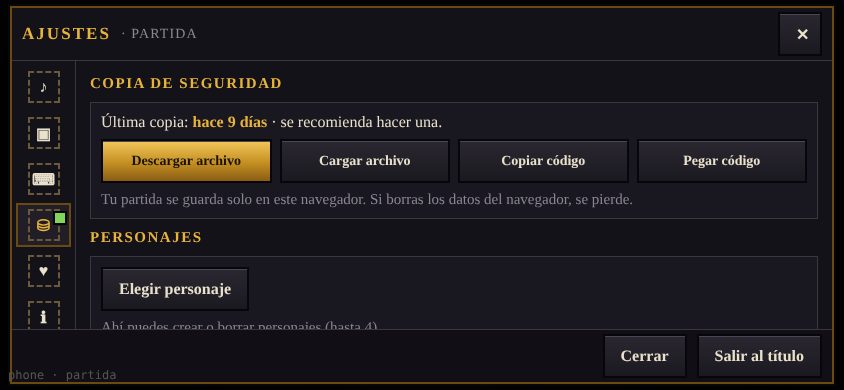

Seis secciones: Sonido, Pantalla, Controles, Partida, Comunidad e Información. El pie con «Cerrar» y «Salir al título» queda siempre fijo. Los iconos son provisionales (recuadro discontinuo). La maqueta en vivo está en panel.html; cambia ?l=desktop|tablet|phone&s=sonido|partida.




Carril de iconos a la izquierda (64 px) y el nombre de la sección en la cabecera. Así se aprovecha el ancho, que sobra, y no se gasta alto, que falta.

